FuzzBench: kirenenko report
warning
Please consider this as a preliminary report to
demonstrate the capabilities of FuzzBench. While we have
tried our best, we have not confirmed that we configured
everything correctly. We are hoping to work together
with the community to validate results and improve the
set of fuzzers, benchmarks, and their configurations in
the future.
See FAQ
for more details.
experiment summary
We show two different aggregate (cross-benchmark) rankings of fuzzers. The first is based on the average of per-benchmarks scores, where the score represents the percentage of the highest reached median code-coverage on a given benchmark (higher value is better). The second ranking shows the average rank of fuzzers, after we rank them on each benchmark according to their median reached code-covereges (lower value is better).By avg. score
| average normalized score | |
|---|---|
| fuzzer | |
| aflplusplus | 99.9 |
| jigsaw_new | 98.4 |
By avg. rank
| average rank | |
|---|---|
| fuzzer | |
| aflplusplus | 1.5 |
| jigsaw_new | 1.5 |
-
Critical difference diagramThe diagram visualizes the average rank of fuzzers (second ranking above) while showing the significance of the differences as well. What is considered a "critical difference" (CD) is based on the Friedman/Nemenyi post-hoc test. See more in the documentation.
Note: If a fuzzer does not support all benchmarks, its ranking as shown in this diagram can be lower than it should be. So please check the list of supported benchmarks for the fuzzer(s) of your interest. The list could be specified in the fuzzer's README.md like this.
-
Median code-coverages on each benchmark
fuzzer aflplusplus jigsaw_new benchmark harfbuzz-1.3.2 8599.0 8625.5 jsoncpp_jsoncpp_fuzzer 639.0 639.0 libxslt_xpath 19061.5 18149.0
harfbuzz-1.3.2 summary
Ranking by median reached code coverage
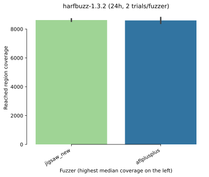Reached code coverage distribution

Mean code coverage growth over time
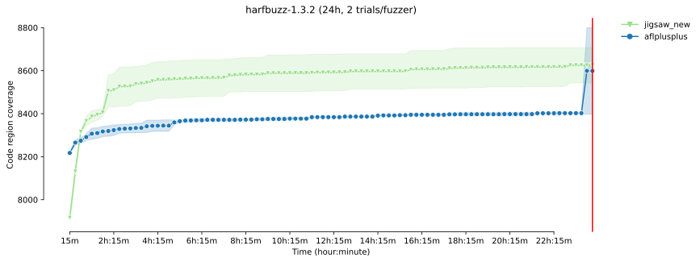Mean code coverage growth over time

* The error bands show the 95% confidence interval
around the mean code coverage.
-
Sample statistics and statistical significance (code coverage)
Code coverage sample statistics
count mean std min 25% median 75% max fuzzer time jigsaw_new 86400 2.0 8625.5 116.672619 8543.0 8584.25 8625.5 8666.75 8708.0 aflplusplus 86400 2.0 8599.0 284.256926 8398.0 8498.50 8599.0 8699.50 8800.0
Vargha-Delaney A12 measure 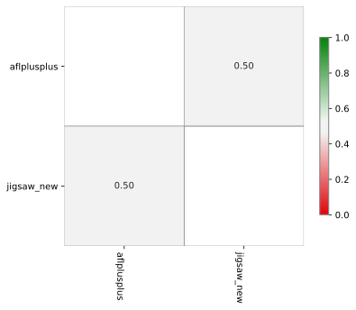 The table summarizes the A12 values from the pairwise Vargha-Delaney A measure of effect size. Green cells indicate the probability the fuzzer in the row will outperform the fuzzer in the column.
Mann-Whitney U test The table summarizes the p values of pairwise Mann-Whitney U tests. Green cells indicate that the reached coverage distribution of a given fuzzer pair is significantly different.
-
Unique code coverage plots
Ranking by unique code regions covered 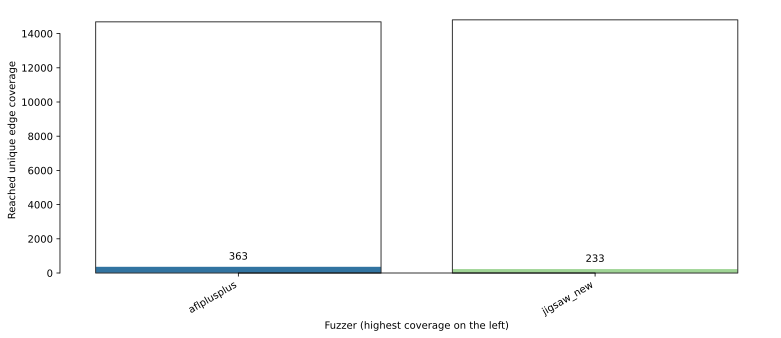 Each bar shows the total number of code regions found by a given fuzzer. The colored area shows the number of unique code regions (i.e., regions that were not covered by any other fuzzers).
Pairwise unique code coverage 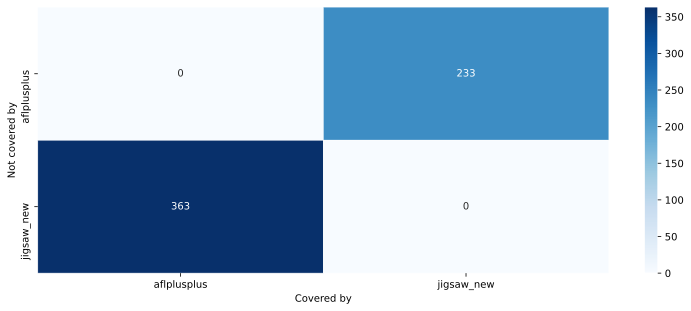 Each cell represents the number of code regions covered by the fuzzer of the column but not by the fuzzer of the row
-
Code coverage reports for each fuzzer on this benchmark
jsoncpp_jsoncpp_fuzzer summary
Ranking by median reached code coverage
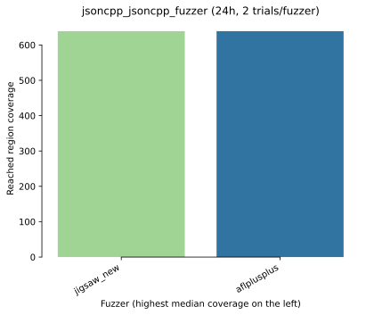Reached code coverage distribution
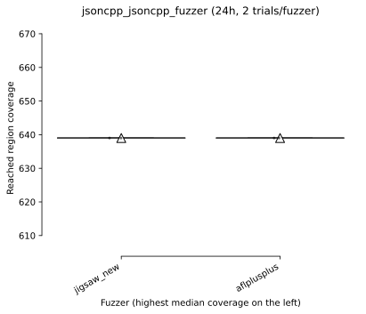Mean code coverage growth over time
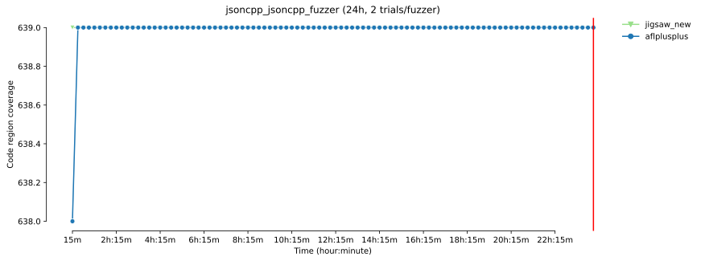Mean code coverage growth over time
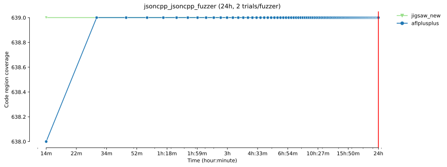
* The error bands show the 95% confidence interval
around the mean code coverage.
-
Sample statistics and statistical significance (code coverage)
Code coverage sample statistics
count mean std min 25% median 75% max fuzzer time aflplusplus 86400 2.0 639.0 0.0 639.0 639.0 639.0 639.0 639.0 jigsaw_new 86400 2.0 639.0 0.0 639.0 639.0 639.0 639.0 639.0
Vargha-Delaney A12 measure The table summarizes the A12 values from the pairwise Vargha-Delaney A measure of effect size. Green cells indicate the probability the fuzzer in the row will outperform the fuzzer in the column.
Mann-Whitney U test The table summarizes the p values of pairwise Mann-Whitney U tests. Green cells indicate that the reached coverage distribution of a given fuzzer pair is significantly different.
-
Unique code coverage plots
Ranking by unique code regions covered 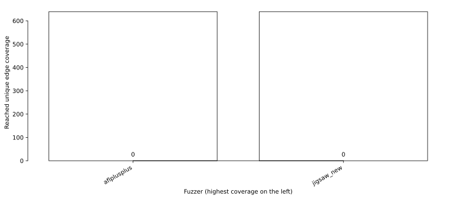 Each bar shows the total number of code regions found by a given fuzzer. The colored area shows the number of unique code regions (i.e., regions that were not covered by any other fuzzers).
Pairwise unique code coverage 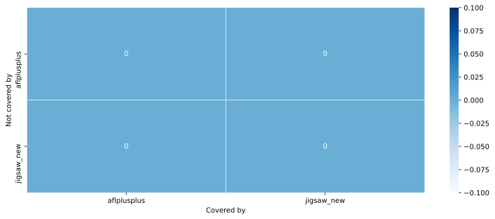 Each cell represents the number of code regions covered by the fuzzer of the column but not by the fuzzer of the row
-
Code coverage reports for each fuzzer on this benchmark
libxslt_xpath summary
Ranking by median reached code coverage
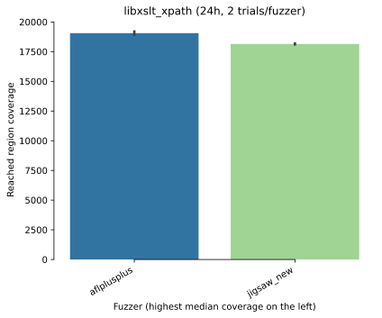Reached code coverage distribution
Mean code coverage growth over time
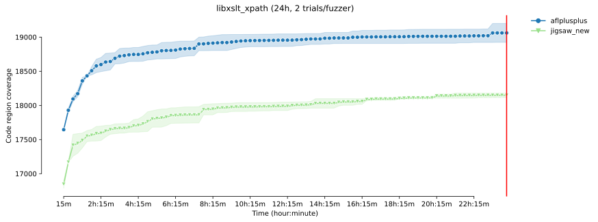Mean code coverage growth over time
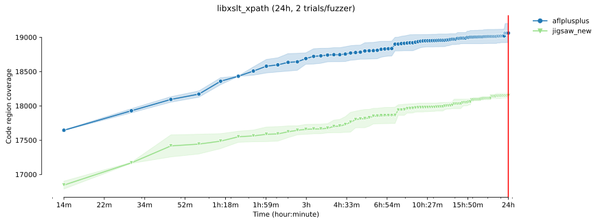
* The error bands show the 95% confidence interval
around the mean code coverage.
-
Sample statistics and statistical significance (code coverage)
Code coverage sample statistics
count mean std min 25% median 75% max fuzzer time aflplusplus 86400 2.0 19061.5 195.868578 18923.0 18992.25 19061.5 19130.75 19200.0 jigsaw_new 86400 2.0 18149.0 46.669048 18116.0 18132.50 18149.0 18165.50 18182.0
Vargha-Delaney A12 measure 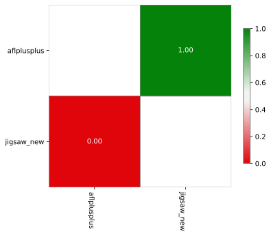 The table summarizes the A12 values from the pairwise Vargha-Delaney A measure of effect size. Green cells indicate the probability the fuzzer in the row will outperform the fuzzer in the column.
Mann-Whitney U test The table summarizes the p values of pairwise Mann-Whitney U tests. Green cells indicate that the reached coverage distribution of a given fuzzer pair is significantly different.
-
Unique code coverage plots
Ranking by unique code regions covered 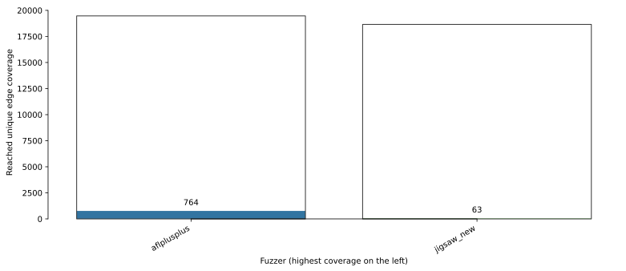 Each bar shows the total number of code regions found by a given fuzzer. The colored area shows the number of unique code regions (i.e., regions that were not covered by any other fuzzers).
Pairwise unique code coverage 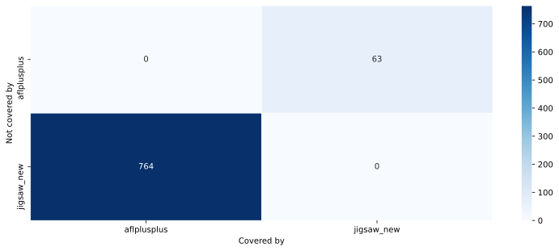 Each cell represents the number of code regions covered by the fuzzer of the column but not by the fuzzer of the row
-
Code coverage reports for each fuzzer on this benchmark
experiment data
You can download the raw data for this report here.Check out the documentation on how to create customized reports using this data. Also see some example Colab notebooks for doing custom analysis on the data here.
The experiment was conducted using this FuzzBench commit: 78cc0ff279d60f1e53d210cd4e74bd990e72cfb0
Experiment Description:
(None,)